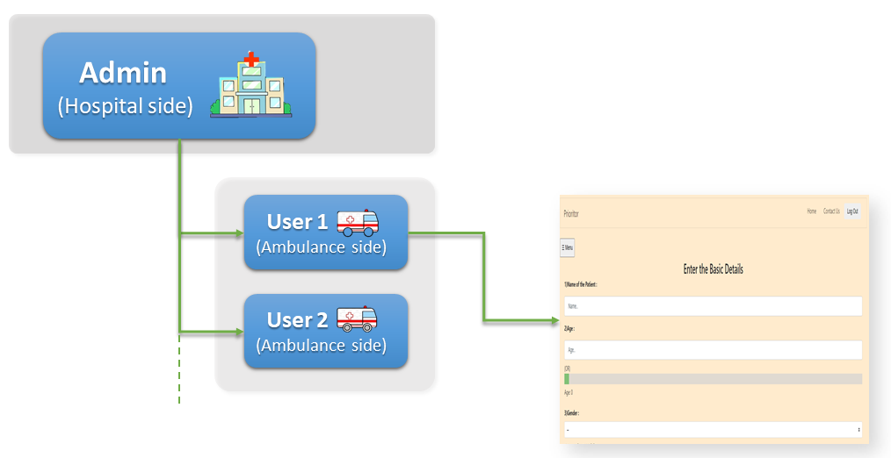
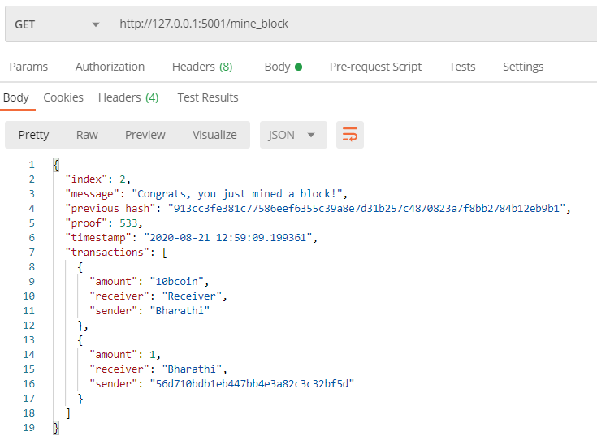

Projects
Research Projects
RGB-D Video Object Detection
Developed a multimodal fusion framework that integrates depth information with RGB data in transformer-based object detectors. Explored multiple fusion strategies (early, mid, and late fusion) and evaluated their impact on detection accuracy under occlusion, blur, and cluttered environments.
This work is part of my master's thesis at the University of Siegen (2024).
- Python
- PyTorch
- DETR / Deformable-DETR
- COCO / SUN RGB-D
Feature Selection for Recommender Systems
Surveyed and compared feature selection strategies for collaborative filtering and content-based recommendation. Evaluated filter, wrapper, and embedded methods on standard benchmarks and analyzed their trade-offs between performance and computational cost.
Seminar project at the University of Siegen (2023).
- Python
- scikit-learn
- Pandas
Software Projects
Prioritor

An ambulance-to-hospital patient information system designed for emergency healthcare workflows. The system captures vital patient data during transport and transmits it to the receiving hospital in real time, enabling faster triage and preparation.
Reached the semifinal stage at the India Innovation Challenge Design Contest (DST India & Texas Instruments, 2021).
- JavaScript
- Vue.js
- Node.js
- MongoDB
- Redis
Bcoin – Cryptocurrency Implementation

A cryptocurrency built from scratch to understand blockchain fundamentals. Implements proof-of-work mining, transaction validation, wallet management, and a peer-to-peer network protocol.
- Python
- Flask
- Cryptography